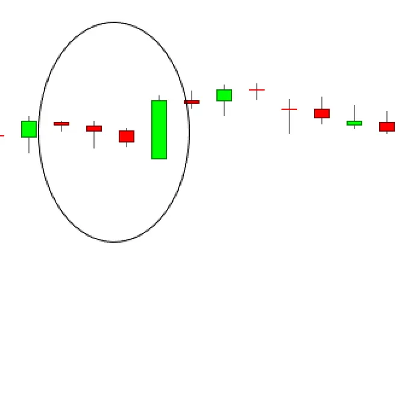

बियरिश थ्री-लाइन स्ट्राइक कैंडलस्टिक पैटर्न एक और अच्छा प्रदर्शन करने वाला कैंडल है जिसे मैंने कुछ सैंपल्स में खोजा। 47 लाख कैंडल लाइनों में से मैंने बस 85 कैंडल लाइनों को खोजा। इसलिए, इन आंकड़ों से निकली सार्थक जानकारी और नतीजे अतिरिक्त सैंपल्स के साथ बदल सकते हैं। अक्सर, सबसे अच्छा प्रदर्शन करने वाले कैंडल वे होते हैं जिन्हें आप नहीं पा सकते हैं (वे अक्सर नहीं होते हैं), और क्योंकि आप उन्हें नहीं पा सकते हैं, इनकी विश्वसनीय टेस्टिंग संभव नहीं होती। शीर्ष-गुणवत्ता वाले प्रदर्शन से निकलने वाले नतीजों से निष्कर्ष निकालना जोखिमपूर्ण होता है और इससे बचना चाहिए। दूसरे शब्दों में, यह कैंडल आंकड़ों के अनुसार इतना अच्छा प्रदर्शन नहीं करता है।
बेअरिश थ्री-लाइन स्ट्राइक को बिशेष रूप से एक बिशिष्ट उपशब्द जारी किया गया है जो एक बिशिष्ट बिन्दु शैली है, लेकिन टेस्टिंग दिखाती है कि यह 84% समय बुलिश रिवर्सल के रूप में काम करता है। यह उसकी प्रदर्शन श्रेणी को 2 पर रखता है, जहाँ 1 सबसे अच्छा प्रदर्शन करने वाला होता है। समग्र प्रदर्शन भी पहले स्थान पर रहता है, इसका अर्थ है कि एक बार ट्रेंड रिवर्स होने के बाद, इसे ट्रेंड में जारी रखने की ज्यादा संभावना होती है।
| Bearish Three-Line Strike Candlestick: Important Results |
थ्योरेटिकल प्रदर्शन: बियरिश कंटिन्यूएशन।
टेस्ट किया गया प्रदर्शन: 84% समय में बुलिश रिवर्सल।
फ्रीक्वेंसी रैंक: 94
ऑवरऑल प्रदर्शन रैंक: 1
मूल्य लक्ष्य के लिए सर्वश्रेष्ठ प्रतिशत: 80% (बुल मार्केट, डाउन ब्रेकआउट)
10 दिनों में सर्वश्रेष्ठ औसत चल: -8.81% (बुल मार्केट, डाउन ब्रेकआउट)
10 दिनों में सर्वश्रेष्ठ प्रदर्शन रैंक: 1 (बुल मार्केट, डाउन ब्रेकआउट)
सभी रैंक ऊपर से 103 कैंडलस्टिक पैटर्न के बाहर हैं जिसमें सर्वोत्तम प्रदर्शक रैंक 1 होता है। "सर्वश्रेष्ठ" उपयोग/बियर मार्केट, अप/डाउन ब्रेकआउट के चार संयोजनों में सबसे उच्च रेटेड का मतलब है।
| Bearish Three Line Strike Example |

| How to Trade the Bearish Three-Line Strike |
चलो अब हम देखते हैं कि आप एक बियरिश थ्री लाइन स्ट्राइक को कैसे ट्रेड कर सकते हैं। बहुत से लोग सोचते हैं कि आप एकल कैंडलस्टिक पैटर्न पर केवल काम कर सकते हैं लेकिन इसके अलावा अतिरिक्त पुष्टि के बिना नहीं। अधिकांश पैटर्न साधारण रूप से इतने विश्वसनीय नहीं होते कि इन पर केवल ट्रेड किया जा सके।
इसके बजाय, आपको फिल्टर और शर्तों को खोजना होगा जो असफल ट्रेड को रोकने में कामयाब होते हैं, जिन्हें आप अन्यथा ले लेते होते हैं।